第25章 高吞吐算术（High-Throughput Arithmetic）
本章导读
第七部分从”算法”转向”系统”。吞吐量（throughput）才是现代芯片的第一指标——GPU 的单精度算力、交换芯片的包转发率，靠的都是流水线。本章讲算术部件的流水化原则、时钟与吞吐的关系、以及脉动阵列（systolic array）——今天 AI 加速器的体系结构原型。
25.1 算术函数的流水化（Pipelining of Arithmetic Functions）
流水线（pipeline）：在组合逻辑中插入寄存器，把一次长延迟计算切成 \(\sigma\) 级，每级一个时钟周期。效果：
- 时钟周期 ≈ 原延迟的 \(1/\sigma\)（+寄存器开销）；
- 延迟（latency）不变甚至略增，但吞吐提升近 \(\sigma\) 倍——每拍可吞入一个新任务。
算术部件的流水切分原则：
- 均衡级延迟：关键路径决定时钟，切分不均等于白送频率；
- 寄存器开销：算术数据通路宽，流水寄存器面积可占 20-40%——级数不是越多越好；
- Hazard 设计：迭代型算法（除法、CORDIC）反馈环内不能随意插寄存器——这是”可流水”与”不可流水”算法的分水岭。
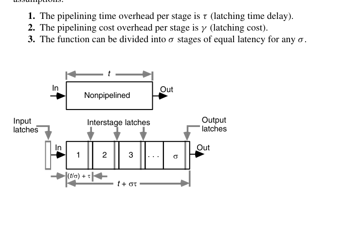
一组具体数字有助于建立直觉。设某乘加单元 \(t = 40\,\mathrm{ns}\)、\(g\) 折合 500 个门，锁存器时间开销 \(\tau = 2\,\mathrm{ns}\)、成本开销 \(\gamma = 25\) 门。不流水时吞吐为 \(1/40\,\mathrm{ns} = 25\) Mops；切成 4 级后每级 \(10\,\mathrm{ns}\)，时钟周期 \(12\,\mathrm{ns}\)，吞吐升到约 83 Mops（3.3 倍），端到端延迟从 40 ns 变为 48 ns，成本增加约 20%。若进一步切成 8 级，周期降到 \(7\,\mathrm{ns}\)、吞吐约 143 Mops（5.7 倍），但此时寄存器开销已与原逻辑的一半相当，且 \(\tau\) 已占去周期的近三成——继续切下去，每一刀换来的频率越来越少。
流水线的效率（efficiency）定义为加速比与级数之比 \(E = S/\sigma\)：级间延迟完全均衡且 \(\tau = 0\) 时 \(E = 1\)；上例中 4 级流水的加速比为 3.3，效率 0.83，8 级时降到 0.71。\(\tau\) 固定时令级数继续加大，效率单调下滑。效率曲线与吞吐曲线放到同一张图上看，合理的工作点通常落在”吞吐尚未饱和、效率尚可接受”的拐角附近——这也是为什么实际设计很少用到理论最优级数，而是停在它的一半到三分之二处。
定量模型。设原功能单元成本为 \(g\)、延迟为 \(t\)，每级锁存的时间开销为 \(\tau\)、成本开销为 \(\gamma\)，且函数能被切成 \(\sigma\) 个延迟相等的级，则流水线版本的三项指标为
\[ T = t + \sigma\tau, \qquad R = \frac{1}{T/\sigma} = \frac{1}{t/\sigma + \tau}, \qquad G = g + \sigma\gamma \]
\(R \to 1/\tau\) 是理论天花板。但工程上把级内逻辑压到约 4 级门（\(4\delta\)）就停手——再切下去，级间信号条数增加带来的 \(\gamma\) 增长、以及时钟树的功耗，会把频率收益全部吃掉。取级延迟恰为 \(4\delta\)（即 \(\sigma = t/4\delta\)）时，三式化为
\[ T = t\left(1 + \frac{\tau}{4\delta}\right), \qquad R = \frac{1}{4\delta + \tau}, \qquad G = g\left(1 + \frac{t\gamma}{4g\delta}\right) \]
括号里那两项就是”为极限吞吐付出的延迟税与面积税”——它们只依赖工艺与寄存器结构，与被流水化的函数无关。
最优级数。吞吐不是唯一目标时，一个自然的品质因数是”单位成本的吞吐”
\[ E = \frac{R}{G} = \frac{\sigma}{(t + \sigma\tau)(g + \sigma\gamma)} \]
令 \(\mathrm{d}E/\mathrm{d}\sigma = 0\)，得到
\[ \sigma_{opt} = \sqrt{\frac{tg}{\tau\gamma}} \]
结论朴素而有用：原函数越慢越复杂（\(t, g\) 大）、锁存越快越便宜（\(\tau, \gamma\) 小），级数就该越多。举个具体数字：\(t = 40\delta\)、\(g = 500\) 门、\(\tau = 4\delta\)、\(\gamma = 50\) 门，得 \(\sigma_{opt} = 10\)——代价是成本与延迟各翻一倍，换来吞吐提升 5 倍。把流水线冒险（数据相关、条件执行迫使排空）算进去之后，实际最优级数会明显小于这个解析值。
这组公式的用处不在于给出精确级数，而在于给出校正方向：换更快的锁存器（降 \(\tau\)）或更窄的接口（降 \(\gamma\)），最优级数立刻右移；反过来，若切分点选在函数内部的”胖”边界上（几十条信号要过寄存器），\(\gamma\) 暴涨，级数必须收敛。这也解释了为什么深流水总伴随着”寻找自然边界”的人工匠心——自动切分工具必须先学会估算每个切点的信号条数。
什么时候不能流水？只要算法内部存在携带反馈的递推 \(s^{(j)} = F(s^{(j-1)})\)——除法的部分余数递推、IIR 滤波器的输出回授、CORDIC 的迭代——寄存器就只能插在递推环路之外，环路延迟照旧限制迭代速率。对付这类结构的办法不是硬插流水，而是变换算法本身：第 26.5 节的循环展开、第 16 章把除法递推改造成乘法链的收敛法，都是把”不可流水的递推”变成”可流水的直馈”的范例。
反过来看，哪些算术单元天然适合深流水？凡是可以写成直馈数据流图的结构都行：阵列/树形乘法器（部分积阵列一层就是一级）、FIR 滤波器（每个抽头一级）、查表 + 乘加的函数求值链。这些结构的共同点是”数据只朝一个方向走”，寄存器可以插在任意位置而不改变功能——这也正是第 26.5 节重定时变换合法的前提。
25.2 时钟速率与吞吐（Clock Rate and Throughput）
吞吐 = 每拍任务数 × 时钟频率。提升路径只有两条：更深流水（缩短周期）与更宽并行（每拍更多任务）。物理现实：
- 流水深度有收益拐点（寄存器延迟占比、时钟树功耗、分支/依赖惩罚）；
- 并行度受面积/功耗墙约束——这就是”功耗墙”时代转向专用加速器（NPU/TPU）的根本逻辑：用领域定制的并行取代通用高频。
两条路径还可以组合：超宽数据通路 + 深流水。GPU 的 SIMT 是”每拍更多任务”的极限形态（一个 warp 32 个线程共用同一条流水线），超标量 CPU 则是”更深流水 + 乱序填坑”的代表。选择哪边取决于负载的规则性：数据级并行度越高、控制流越平直，越应该走宽度方向（宽而慢，能效还好）；依赖链长、分支密集的标量代码，只能往深里切并承担冒险惩罚。
时钟周期的严格下界必须把时钟偏斜（clock skew）算进来。若随机偏斜的上界为 \(\pm\varepsilon\)，最坏情形下输入锁存晚到 \(\varepsilon\)、输出锁存早到 \(\varepsilon\)，可用于计算的时间被扣掉 \(2\varepsilon\)：
\[ \Delta t \ge t_{stage} + \tau + 2\varepsilon \]
当级数很多、\(\Delta t\) 很小时，\(\varepsilon\) 所占比例上升——这就是为什么深流水通常要配更昂贵的时钟分配网络（H 树、网格、去偏斜电路）。
代入数字感受更深：2 GHz 设计（周期 500 ps）中，若锁存开销 50 ps、随机偏斜 ±50 ps，级内可用于逻辑的预算只剩 300 ps——偏斜一项吃掉两成预算。频率升到 4 GHz，同样的 50 ps 偏斜占比立刻翻倍；而偏斜绝对值并不随工艺同步缩小，这就是 GHz 级深流水芯片里时钟网络动辄占去两三成总功耗的原因。
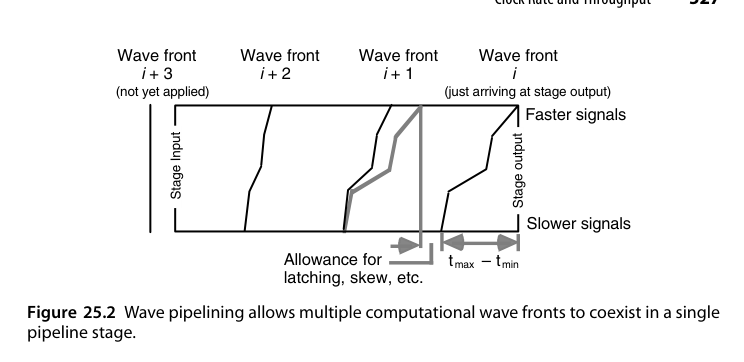
波流水（wave pipelining）是一个反直觉的技巧。级延迟并非常数，最快路径为 \(t_{min}\)、最慢路径为 \(t_{max}\)；既然两者之间存在时差，为什么不干脆让多个”计算波前”同时在一个流水级里穿行？只要相邻两组输入的信号在空间上（沿逻辑深度方向）彼此分开，它们在时间上重叠并无害处：
\[ \Delta t \ge t_{max} - t_{min} + \tau \]
于是提高吞吐有两条路：传统的减小 \(t_{max}\)，以及反直觉的抬高 \(t_{min}\)——即延迟均衡化。极端情形下 \(t_{max} - t_{min} = 0\)，\(\Delta t\) 只要大于等于 \(\tau\) 即可，此时必须在输出锁存处人为注入受控时钟偏斜（controlled clock skew）才能正确采样第 \(i\) 级的结果：
\[ S^{(i)} = \left(\sum_{j=1}^{i} \bigl(t^{(j)}_{max} + \tau\bigr)\right) \bmod \Delta t \]
例：\(t_{max} + \tau = 12\,\mathrm{ns}\)、\(\Delta t = 5\,\mathrm{ns}\)，则输出锁存相对输入锁存需要 \(+2\) ns 的偏斜。波流水的代价是对随机偏斜更敏感：\(\Delta t \ge t_{max} - t_{min} + \tau + 4\varepsilon\)——输入、输出两端各有 \(2\varepsilon\) 的最坏损失，而分母如今已经很小了。
波流水的思想可以追溯到 1960 年代末 Cotton 对”最大速率流水”的研究，1990 年代一度成为研究热点（当时期望用它把时钟频率推过传统流水线的极限）。它最终没有进入主流 EDA 流程，根本原因在于延迟均衡必须对工艺、电压、温度（PVT）全域成立——仿真里对齐的两条路径，到了硅片上、到了高温角落里就会错开，而波流水恰恰把性能押在这个错开量上。
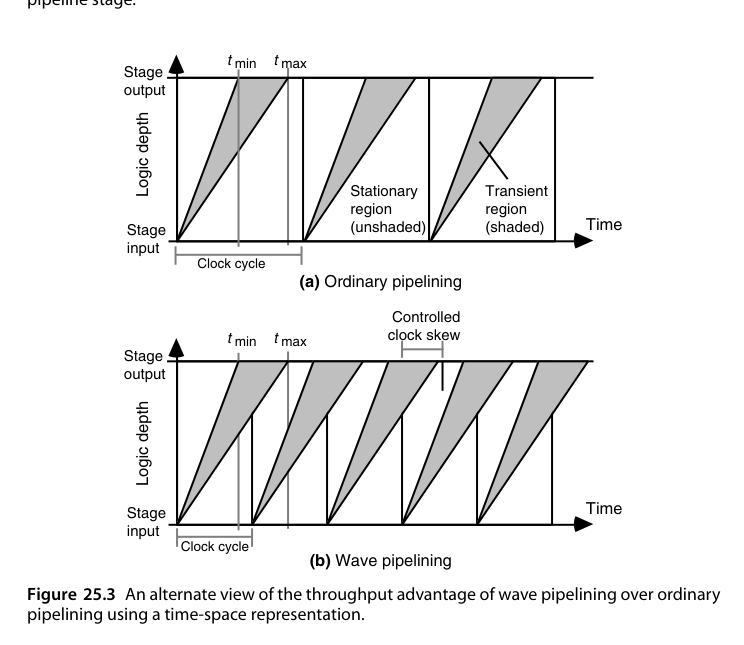
波流水在工业界从未成为主流设计风格（对工艺漂移和数据相关的延迟极其敏感），但它留下了一个持久的观念：均衡路径既是低功耗手段（消除毛刺），也是高吞吐手段（压缩 \(t_{max}-t_{min}\)）。第 26 章会从能耗角度再次遇到同一件事。
25.3 Earle 锁存器（The Earle Latch）
经典高速锁存技术：把锁存器嵌入逻辑门内（时钟与数据路径合并优化），减少每级流水的”寄存器税”。它代表了电路级流水优化——当逻辑级延迟已经很小时，锁存器自身的建立/保持开销占比上升，必须电路结构创新。现代对应物：脉冲锁存器（pulsed latch）、时间借用（time borrowing）。
Earle 锁存器的行为方程是一条带反馈的与或式：
\[ z = dC \lor dz \lor Cz \]
\(C = 1\) 时输出跟随数据输入 \(d\)；\(C\) 由 1 降到 0 的瞬间采样并保持，此后只要 \(C\) 保持为 0，\(d\) 的变化不影响 \(z\)。它最初是为锁存进位保存加法器（carry-save adder）而设计的。
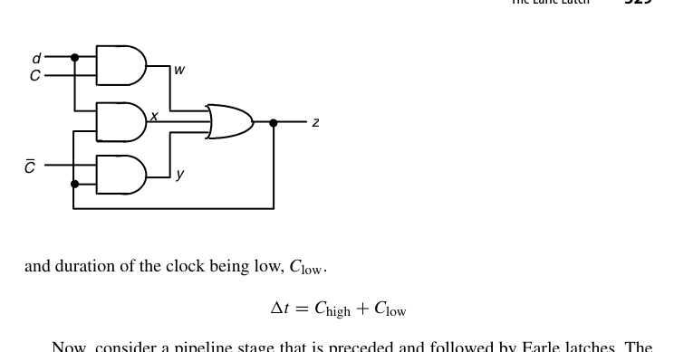
真正有价值的性质是：它能与前级的两级与或逻辑合并，而不增加一级门延迟。设前级算出 \(d = vw \lor xy\)，代入上式展开得
\[ z = (vw \lor xy)C \lor (vw \lor xy)z \lor Cz = vwC \lor xyC \lor vwz \lor xyz \lor Cz \]
结果依然是一个两级与或网络——锁存器只是给与阵列多添了几个带 \(C\) 或 \(z\) 的乘积项。这就是所谓的”零延迟锁存”：在关键路径上，加法器的最后一级逻辑与寄存器合二为一。
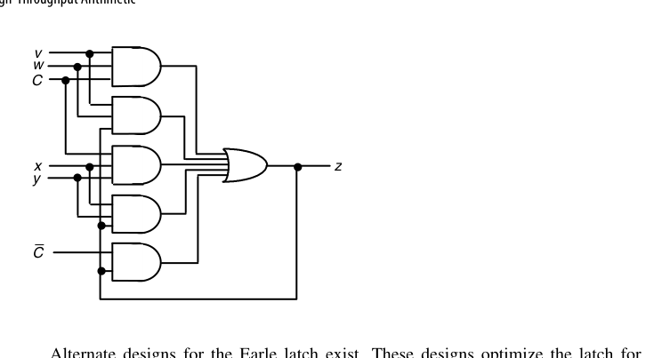
代价是对时钟脉冲宽度施加了双边约束。设最大/最小门延迟为 \(\delta_{max}, \delta_{min}\)，级最小延迟为 \(t_{min}\)，则
\[ 3\delta_{max} - \delta_{min} + S_{max}(C{\uparrow}, \bar{C}{\downarrow}) \le C_{high} \le 2\delta_{min} + t_{min} \]
下界保证：数据确实被保存下来，且当 \(C\) 的 0→1 略微领先 \(\bar{C}\) 的 1→0 时不至于因逻辑冒险（hazard）锁进错值；上界保证：时钟必须在下一组输入的最快信号来得及改变本锁存器输入之前变低。这类”同时有上下界的时序约束”正是 Earle 锁存器难用之处，也是后续各种改进型（如不需要数据扇出的变体）试图简化的地方。
代入一组数感受一下窗口有多窄：\(\delta_{max} = 0.3\,\mathrm{ns}\)、\(\delta_{min} = 0.15\,\mathrm{ns}\)、级最小延迟 \(t_{min} = 0.6\,\mathrm{ns}\)，忽略 \(S_{max}\) 项，则 \(C_{high}\) 必须落在 \([0.75,\ 0.9]\,\mathrm{ns}\) 内——整个时钟周期里高电平的合法宽度只有 150 ps。这样的约束只能由电路设计师手工保障，无法丢给标准单元流程，这正是 Earle 锁存器留在定制数据通路（手工设计的乘法器、寄存器堆）而没有进入 ASIC 综合流程的原因。
把 Earle 锁存器嵌进进位保存加法器（它最初的应用场景）之后，一条乘法累加链的每级延迟可以压到 3 级门左右——早期高性能乘法器能把时钟周期做得极低，靠的正是这类电路技巧。今天的对应技术包括脉冲触发器（pulsed flip-flop）、相邻透明锁存器之间的时间借用（time borrowing）、以及把锁存功能分摊进多米诺逻辑的动态锁存结构。共同思想不变：当时钟周期逼近几级门延迟时，寄存器不能再是外挂的盒子，必须融化进逻辑里。
25.4 并行与数字串行流水线（Parallel and Digit-Serial Pipelines）
数字串行（digit-serial）：介于位串行（1 比特/拍）与全并行（\(k\) 比特/拍）之间，每拍传 \(d\) 位（一个”digit”）。\(k\) 位数据 \(k/d\) 拍传完：
- 面积 ≈ 全并行的 \(d/k\)；
- 吞吐 = 全并行的 \(d/k\)；
- 面积-吞吐乘积近似不变，但功耗/布线的甜点往往在中等 digit 宽度。
这是 NoC 链路、SerDes 接口、以及资源受限 FPGA 设计的常用刻度尺。
以 32 位数据通路为例：全并行乘法器需要 32 位宽的压缩树与最终加法器；digit 宽度取 8，则同样功能可用约 1/4 的数据通路面积在 4 拍内完成；取 \(d = 4\) 则面积约为 1/8、8 拍完成。翻转的电容随数据通路同比例缩小，总功率近似按面积下降，而每次操作的能量基本不变——这正是数字串行在低功耗场景的真实卖点：省的是功率与面积，不是能量。
digit 宽度的最优值由两个相反趋势夹出来：\(d\) 越小，数据通路越省，但控制、寄存器与接口的固定开销占比越大，且完成一次运算的拍数越多；\(d\) 越大则迅速逼近全并行的成本。经验上甜点常落在 \(k/8\) 到 \(k/4\) 之间。还有一条布线视角的约束：digit 宽度决定了每个周期要在模块间搬多少条线，在布线资源紧张的设计（FPGA、高密度标准单元）里，\(d\) 常常是被布线而不是被逻辑面积钉死的。
关键在于：哪些运算天生低位序可流水，哪些不是。以
\[ z = \left(\frac{(a+b)\,c\,d}{e-f}\right)^{1/2} \]
为例，它由两次加/减、两次乘法、一次除法、一次开方按固定流图串成。
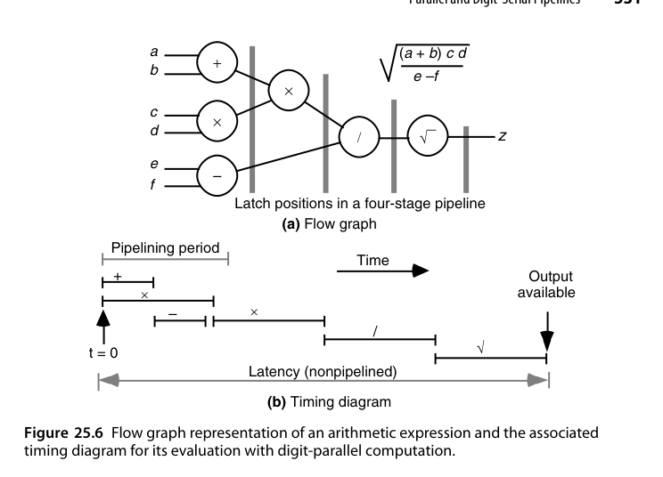
加法和乘法可以最低位优先（LSB-first）位串行地做：只要 \(a+b\) 和 \(c \times d\) 的最低位一出来，下一级乘法器就能开工——每往关键路径上挂一个功能单元，总延迟几乎不增加。流动性好得惊人。
把图 25.6 的时账具体化：设加/减单元需 \(t_a\)、乘法器需 \(t_m\)、除法与开方各需 \(t_d\)。数字并行方案的总延迟约为 \(2t_a + 2t_m + 2t_d\)，且每个单元算完就闲置，利用率极低；数字流水方案中乘法器在加法器吐出第一个数字后即开工，整条链的完成时间只比最慢的那个单元多出一小段”排头”时间。挂进链里的单元越多、链越长，这种重叠的收益越大——这是数字流水相对数字并行的本质优势。
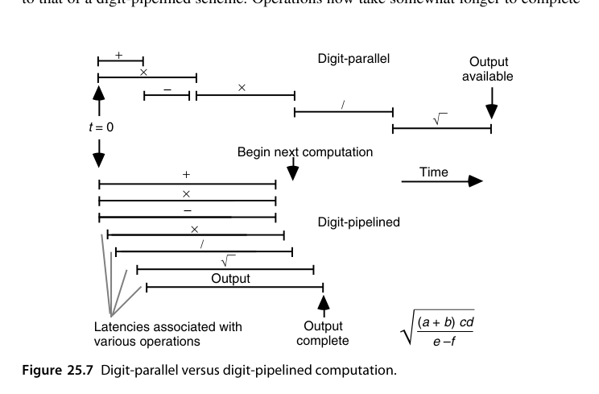
除法和开方却必须最高位优先（MSB-first），而且它们的首位依赖于操作数的所有位。看一个十进制例子，\(0.1234/0.2469\)：
- 只看首位数字 \(0.1xxx / 0.2xxx\)，商的首位可能在 \([3, 9]\) 中的任何一位（最小约 \(0.1000/0.2999 \approx 0.3334\)，最大约 \(0.1999/0.2000 \approx 0.9995\)）；
- 看到第二位仍不解决问题，\(0.12xx/0.24xx\) 落在约 \([0.4802, 0.5413]\)；
- 直到看完全部四位，才能确定首位商 \(q_{-1} = 4\)。
因此，用标准（非冗余）数制做位串行/数字串行的全流水级联，只能覆盖”加法-乘法”链；除法和开方必须先把操作数收齐，再回到第 14、21 章的完整算法。唯一的出路是允许结果以冗余形式输出——冗余数允许事后修正选错的商位/根位，所以只需操作数的高几位就能定出下一位。这是第 25.5 节在线算术的动机。
25.5 在线/数字流水算术（On-Line or Digit-Pipelined Arithmetic）
在线算术（on-line arithmetic）：操作数与结果都按最高位先出的串行流，第 \(j\) 位结果在收到前 \(j + \delta\) 位输入后即可产出（\(\delta\) 为在线延迟）。它让长串算术运算（如 \(((a \times b) + c) / d\)）可以全流水级联：上一级的结果高位先行喂给下一级，总延迟 ≈ 各部件在线延迟之和，而非各自完整延迟之和。
代价：需要冗余表示（高位先行意味着修正只能向低位传播）、控制复杂。在专用信号处理流水线（CORDIC 级联、复数运算链）中有独特价值。
结果最终以冗余形式产出，而系统其余部分多半要常规二进制。好在转换可以在线进行（on-the-fly conversion）：维护两个寄存器 \(Q\)（已收到前缀在”当前位为 0”假设下的值）与 \(Q^-\)（“当前位为 \(-1\)”假设下的值），每来一个新数字就按三种情况同时更新两者，最后一个数字到达时直接选出正确值——整个转换被吸收进串行流，不需要额外的一次完整加法。
在线算术最成功的落点是固定拓扑的信号处理链：自适应滤波器的状态更新（乘加交替）、坐标变换（CORDIC 旋转 → 伸缩 → 反三角的级联）、复数运算链。这些场景里各级单元全部 MSB-first 流水，中间没有任何位宽转换与整字缓冲，端到端延迟约等于各级在线延迟之和再加链长——比起”每个单元收齐整个字再开工”的传统组织，流水深度直接降了一个量级。
二进制有符号数字（BSD, binary signed-digit）——基 2、数字集 \([-1, 1]\)——给出最简单的在线硬件。更高的基 \(r = 2^j\) 用更大的数字集把周期数降下来，但元胞更复杂、引脚更多，能否真的更快要看时钟频率是否同步下降；实践中 \(r > 16\) 很少划算。浮点数还要求指数先到、尾数后处理，属于可直接叠加的工程细节。
各类基本运算的在线延迟（收到第 \(i\) 位输入到产出第 \(i\) 位输出之间的拍数）如下：
| 运算 | 在线延迟（拍） | 前提 |
|---|---|---|
| 加法 | 1 / 2 | 数字集支持无进位加法 / 只能有限进位加法 |
| 乘法 | 1 / 2 | 同上 |
| 开方 | 1 - 2 | 视数制而定 |
| 除法 | 3 / 4 | 支持无进位加法 / 只能有限进位加法 |
读这张表的方式：加法和乘法”看见输入的高位就能产出结果的高位”，所以延迟最小；开方稍难，因为根的高位受被开方数低位的微弱影响；除法最难，因为商同时受被除数与除数两端不确定性的拉扯（下面会用一个基 4 的例子看清这一点）。这张表也是设计在线运算链的”接线图”——把各单元的在线延迟错开对齐，数据流才能严丝合缝地咬合。
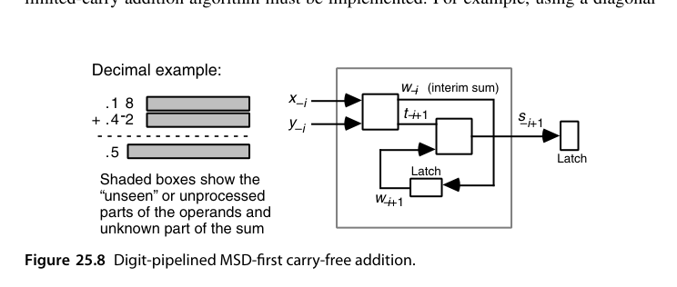
加法的第 \(-i\) 位结果只依赖两个操作数的第 \(-i\) 与 \(-i-1\) 位（这正是第 3 章无进位加法的定义），所以收到两个最高位数字就能吐出结果的最高位——图中斜线右侧的阴影代表”尚未看到”的操作数低位与”尚不可知”的和的低位。
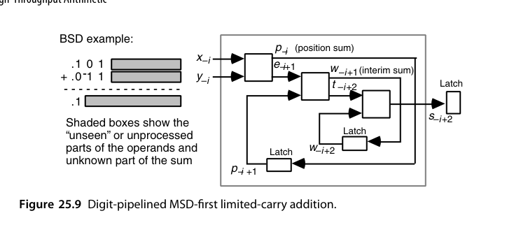
BSD 输入不满足无进位加法的条件，必须改用有限进位加法：先算位置进位 \(t_{-i+2}\) 与位置和 \(w_{-i+1}\)，再合并出临时和 \(w_{-i}\)，因此多用一级锁存延迟，在线延迟变成 2 拍。
除法的延迟之所以高达 3-4 拍，直观原因是被除数与除数的不确定性对商的影响方向相反，必须同时收窄两端。以 \(r = 4\)、数字集 \([-2, 2]\) 为例（可表示范围仅为 \((-2/3,\, 2/3)\)）：
- 第 1 拍：被除数 \((.0\cdots)_4\)、除数 \((.1\cdots)_4\) → 商落在 \((-2/3,\,2/3)\)，\(q_{-1} \in [-2, 2]\)；
- 第 2 拍：\((.00\cdots)_4 / (.1\bar{2}\cdots)_4\) → 收窄到 \((-1/2,\,1/2)\)，仍不足以定出首位；
- 第 3 拍：收窄到 \((1/16,\,5/16)\)，\(q_{-1} \in [0, 1]\)；
- 第 4 拍：才最终收敛到 \(q_{-1} = 1\)。
有人证明过：只要数制支持无进位加法，3 拍总是充分必要；若只能做有限进位加法，则需要 4 拍。
在线乘法的递推值得写下来。设到第 \(i\) 拍为止，两个操作数已收到的高位部分分别构成前缀 \(A_{[i]}\) 与 \(X_{[i]}\)，新到数字为 \(a_{-i}\)、\(x_{-i}\)。部分积满足
\[ P_{[i]} = P_{[i-1]} + \bigl(a_{-i} X_{[i-1]} + x_{-i} A_{[i-1]}\bigr)\, r^{-i} + a_{-i} x_{-i}\, r^{-2i} \]
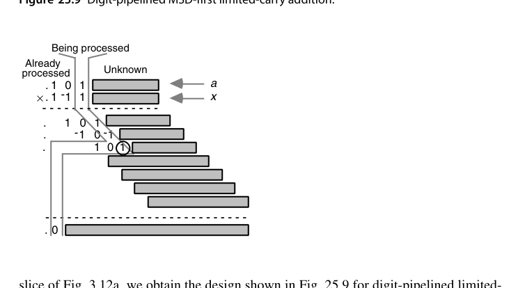
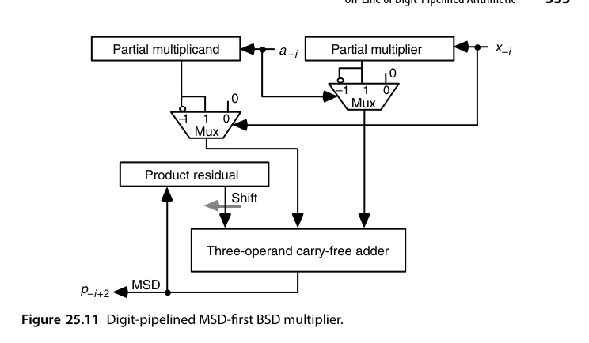
乘法的每拍工作是：把新到的 \(a_{-i}\) 与 \(x_{-i}\) 分别乘上已有的部分乘数和部分被乘数，再加上 \(a_{-i}x_{-i}\)，与左移一位的乘积残量 \(p^{(i-1)}\) 做三操作数无进位加法；结果的最高位就是本拍要输出的数字，被丢弃，余下的数字构成新的残量 \(p^{(i)}\)。
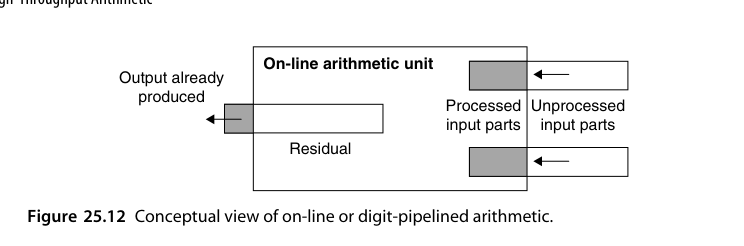
所有在线运算共用同一幅图景：残余（residual）+ 已处理前缀 + 未处理后缀。对除法而言，残余量就是”被除数减去已知的商数字与除数相乘所得的部分积”；每确定一位商，就从这个残余里减去两项乘积（新商位 × 部分除数、新除数位 × 部分商），再用残余的高几位去估计下一位商。这与第 14 章 SRT 的残余递推是一回事，只不过操作数是”逐位抵达”的。
在线算术用很小的在线延迟换来了”运算链全流水”的能力，在 CORDIC 级联、复数乘加链这类固定拓扑中有过成功应用；但它要求全局统一采用冗余数、并承担最后的冗余-二进制转换开销。当 VLSI 引脚限制不再是瓶颈、而设计周期与工具链成为瓶颈时，“大家都写 $a + b$”的结构胜出了。它的思想遗产留在今天的流式数据流架构里。
25.6 脉动算术单元（Systolic Arithmetic Units）
脉动阵列（systolic array）：大量简单 PE（处理单元）规则连接，数据像血液一样在阵列中”脉动”流动，每个 PE 每拍做一次小运算（通常是 MAC）并把结果传给邻居。性质：
- 计算与通信严格局部化——无全局总线、无长连线；
- 完美流水：阵列越大吞吐越高，延迟线性增长但吞吐恒定；
- 矩阵乘法是最经典映射。
判据还需要加严一条：任何未经锁存的信号都不允许跨多个单元传播——否则行波进位加法器也要算「脉动」了。进位链不经寄存器地横跨整个字宽，所以它不是脉动结构；这一条把「局部性」从几何要求提升成了时序要求。
三个值得记住的构造实例：
- 阵列乘法器 → 位并行脉动乘法器。图 11.18 的流水阵列乘法器把 \(a_i\) 广播给整列、把 \(x_j\) 广播给整行；把广播改成「从前一个 PE 接过来、每拍往下（或往右）传一格」，同时在其余输入路径上补齐等量延迟，电路功能完全不变——这种变换叫脉动重定时（systolic retiming）。若要求乘积各位同时可用，还要在 \(p\) 输出路径上补延迟。
- 数字流水乘法器 → 脉动形式。图 25.11 中 \(a_{-i}\) 与 \(x_{-i}\) 驱动一大批 2 选 1 多路器，扇出巨大；但并不需要立刻用到 \(x_{-i}a_{[-1,-i+1]}\) 的全部数字，因此可以把相关动作沿阵列铺开：头元胞先形成最高位，输入数字继续右传、结果左传。
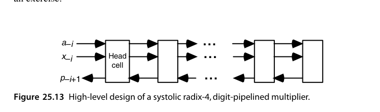
- Montgomery 模乘天生适合脉动化：它的”是否减去模 \(m\) 的倍数”由最低位决定，与进位从低位向高位传播的方向一致，从而化解了第 15.4 节提到的方向冲突；只需把普通阵列乘法器的元胞换成能存部分积位并能做加法带 \(m\) 的复杂元胞即可。
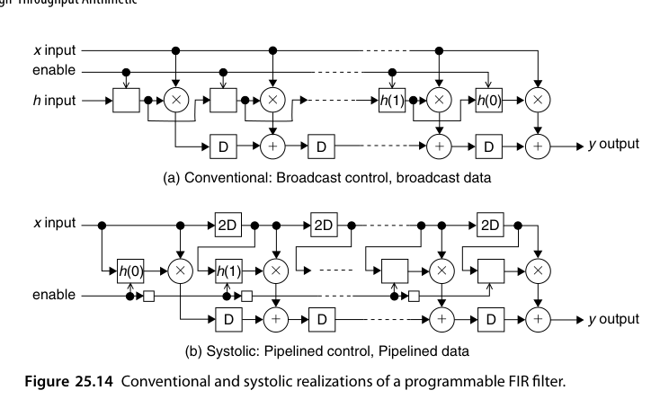
\(N\) 抽头 FIR 的常规实现是 \(y(t) = \sum_{i=0}^{N-1} h(i)\,x(t-i)\)：系数 \(h(i)\) 由控制信号广播到所有抽头单元。脉动版本把数据与控制一起流水化：输入样本沿链一级级右传，系数载荷也随时间戳向前传递，不再有任何信号需要跨越整个阵列。
把时序账算清楚：常规广播实现的时钟周期里含一条穿越全部 \(N\) 个抽头的广播线，其延迟随 \(N\) 线性增长，吞吐随之衰减；脉动版本中每条连线只连接相邻单元，时钟周期与 \(N\) 无关——\(N\) 加倍只是把流水填满的时间（延迟）加了几拍，每拍出一份结果的速率分毫不变。这个”延迟换吞吐、且延迟只涨线性”的交换比，正是脉动结构在大规模阵列上不可替代的原因。
矩阵乘法映射到脉动阵列有三种经典数据流：输出固定（每个 PE 持有一个 \(C_{ij}\) 累加器，\(A\) 的行与 \(B\) 的列交叉流过）、权重固定（TPU v1 的选择：权重预先载入 PE，激活流过阵列）、行固定（结果行驻留阵列内）。三者的差别不在算力而在数据搬运量——谁静止、谁流动，决定了 SRAM 的读写次数与能耗，这正是第 26 章的视角：脉动阵列省的不只是延迟，还有搬数的焦耳。
脉动重定时的合法性由一条简单的割集规则（cut-set rule）保证：在数据流图上任取一条把图分成两半的割，若把割上所有前向边的延迟各加 \(k\)、所有反向边的延迟各减 \(k\)（不能减成负数），则系统的输入输出功能完全不变。FIR 的广播数据路径变成逐级传递，正是对每条广播线应用一次割集变换的结果。这条规则也是第 26.5 节重定时优化的理论基础——两者是同一枚硬币的两面。
脉动阵列 1980 年代由孔祥重（H.T. Kung）提出时因制造技术受限而沉寂，2016 年 Google TPU 以 256×256 脉动 MAC 阵列重出江湖——深度学习的矩阵乘法负载 + 先进工艺，让”数据流过规则阵列”的古老思想成为 AI 芯片的主流架构之一。读本节时值得对照 TPU/NPU 的架构文档。
对可编程 FIR 的两种实现做过详细建模：随着工艺缩放、电路速度提升，脉动版本几乎保住全部速度收益，而常规版本在仅 20 个抽头时就丢掉近一半，到 200 抽头时几乎丢光——全部损失来自互连延迟与负载。换句话说，连线延迟在延迟预算中的占比越高，「通信局部化」这一条的价值就越大；这也是今天先进工艺下脉动架构重新吃香的物理原因。
本章小结
- 流水线用寄存器换吞吐；\(T = t+\sigma\tau\)、\(R = 1/(t/\sigma+\tau)\)、\(G = g+\sigma\gamma\)，\(\sigma_{opt} = \sqrt{tg/(\tau\gamma)}\)。
- 时钟周期下界要计入锁存开销与随机偏斜；波流水把 \(t_{max}-t_{min}\) 而非 \(t_{max}\) 作为目标。
- Earle 锁存器把寄存器”融”进两级与或逻辑；代价是严格的双边脉宽约束。
- 数字串行给出面积-吞吐的连续刻度；LSB 优先的加/乘可流水，MSB 优先的除/开方不行。
- 在线算术：高位先出 + 冗余表示，让运算链全流水；在线延迟加 1-2、开方 1-2、除 3-4 拍。
- 脉动阵列：局部通信的规则阵列，吞吐与规模无关、延迟线性增长——AI 加速器的体系结构原型。